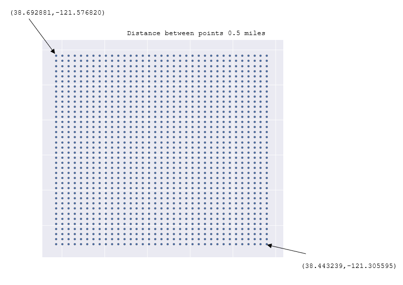

Overview of One Implementation for Twitter Based GeoSentiment Analysis
By: M. Hernandez, PhD
Motivations for the Study
- How to leverage ArcGIS's arcpy module to aid in analyzing and formatting of geospatially dependent results
- How one could implement a twitter based geosentiment analysis
Technologies Involved
The main technologies involved in this project are ArcGIS and Python with the incorporation of essential modules
- Python
- ArcGIS
Technologies Involved Cntd.
- Python
- Programmatic language to engage with ArcGIS, Twitter, and Sentiment analysis
- ArcGIS
- Platform used for presenting geospatially dependent information
Technologies Involved Cntd.
Specific Python Packages
- arcpy: ArcGIS communication
- tweepy: connector to Twitter
- textblob: sentiment analysis module
- nltk: preprocessing of textual information
- sqlalchemy: used to manage and create datamodel
- sqlite3: used to insert and query data from sqlite database
Overview of the Project Workflow
Three main parts to the project workflow
- Acquisition of spatially related Tweets; done independent of the following steps
- Map Generation of Tweet "sentiment"
- Tweet sentiment encoded maps to Twitter
Diagram of Workflow

Tweet Acquisition
Python module: tweepy
Module used to interact with twitter
Grid out a specified geographic region
This project chose the northwest corner of analysis (38.692881,-121.576820) and the southeast corner to be (38.443239,-121.305595) with a 0.5 mile radius
Tweet Acquisition
Grid out a region
This is done to indirectly measure tweets that are found within a geographic region
You can pay for a service OR you can infer by passing a geographic point with a tolerance radius to the twitter api
This allows you to obtain tweets related to a specific geographic region
Tweet Acquisition: Tweet Grid
Tweet Acquisition: Sentiment Analysis
Python module: textblob
We utilize textblob as an example of a way to estimate sentiment.
Note: The implementation of this module is meant as an example. In real world situations there are many additional steps in order to generate an accurate and reliable sentiment estimator
Tweet Acquisition: Sentiment Analysis
Presented as positive, neutral, and negative
- positive rated as +1 value
- neutral rated as 0 value
- negative rated as -1 value
Tweet Acquisition: Write Data to Database
Python module: sqlalchemy
- module used to interact to database
- write the tweet, sentiment value, and metadata to database
Map Generation: Query Database
Python module: sqlite3
Query the data base on some predefined query logic
This project uses a two day time delay from the current date
- e.g. data to be included in study = 2 days in the past to today
Note that while the default query logic present here is 2 days, one can modify the settings such that it will query alternative criteria (e.g. tweet like '%stephon clark%')
Map Generation: Generate Feature Class in arcpy
Python module: arcpy
Pass results from the tweet query into arcpy's module to create new feature class based on newly captured tweets
Note that within arcpy there are additional methods that need to be accessed to complete the aformentioned step.